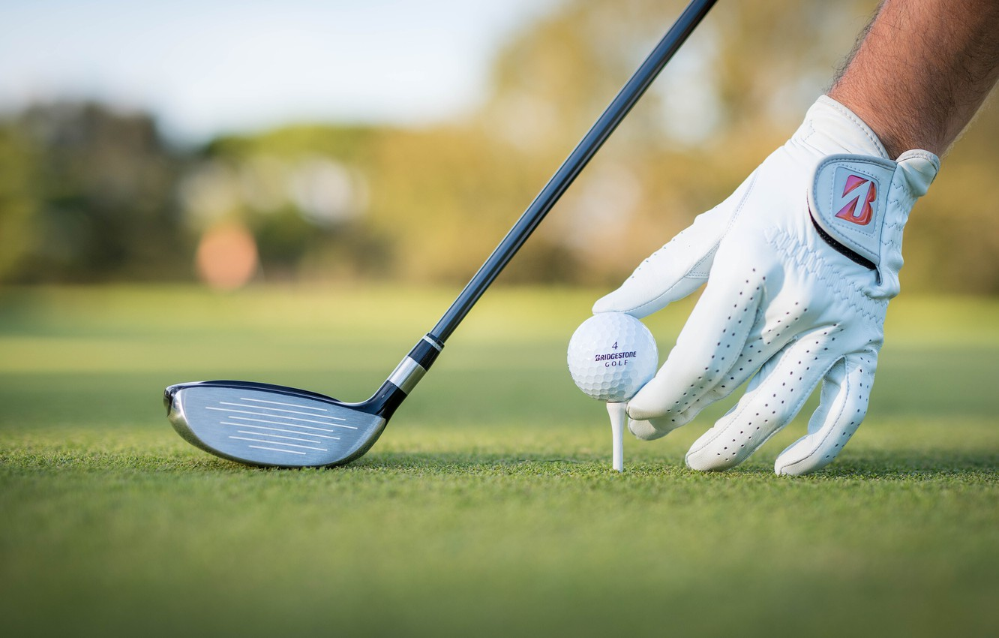
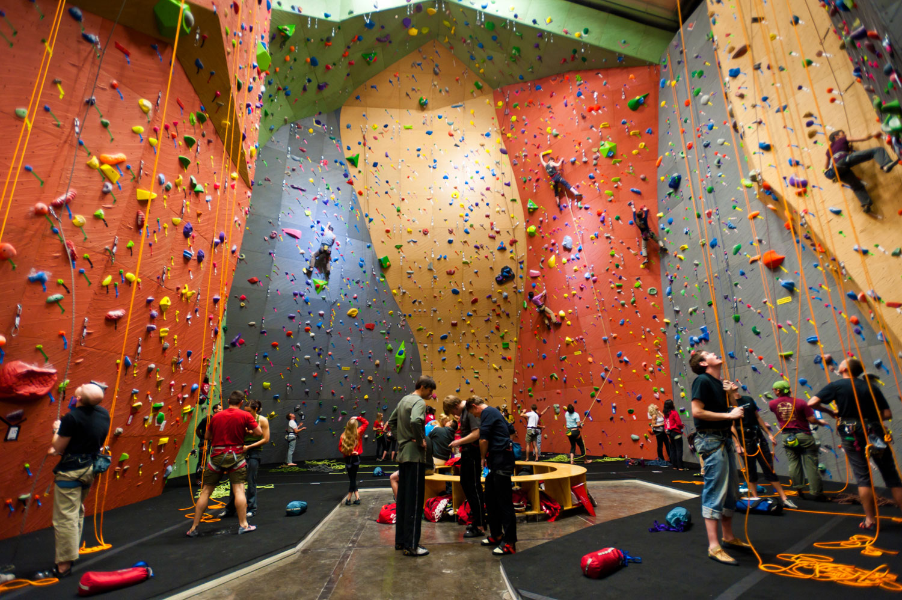

Очень многие предпочитают активных отдых тихому сидению дома и просмотру филмов. И эта статья как раз для таких людей
Любите бегать, прыгать, падать, щекотать нервы? Если это так, то мы готовы предложить вам несколко вариантов активно провести свои выходные!
Пейнтбол
Пейнтбол — командная игра с применением маркеров (пневматическая пушка), стреляющих шариками с краской
Существует некотоыре количество компаний, которые располагаются недалеко от Минска и готовы организовать вам игру
Например, существует парк «Кольт». Они обладают очень широким ассортиментов площадок и комплектов для игры, а также готовы предложить вам отдых после самой игры
Ещё один вариант - это клуб «Барс». Этот клуб готов предложить 3 площадки и несколько вариантов маркеров
Если вам не понравился не один из вариантов, то вы можете посмотреть другие парки и клубы здесь
Полёт на воздушном шаре
Вариант для настоящих романтиков!... Или экстремалов, ведь не каждый осмелится отправиться парить в небе в корзинке, привязанной к куску ткани!
Сайт aerotour.byготов организовать для вас полёт на воздушном шаре над столицей в течение 2-3 часов. Вы увидите все достопримечательности Минска с совершенно другого ракурса!
Хотите сделать подарок близкому человеку? В этом вам поможет сайт surprise.by. Здесь вы можете купить сертификат и подарить человеку незабываемые эмоции. Ну, или вы можете самостоятельно отрпавиться ввысь, ведь никто не запрещает использовать сертификат для себя любимого :)
Верховая езда
Лошади - гордые и грациозные животные. Всадники имеют такие же качества, ведь не каждому дано оседлать лошадь. Хотите попытаться оседлать лошадь? Вам нравится вид стройного всадника, смотрящего вдаль? Этот вариант явно ваш!
Первый вариант - это усадьба «Бивак». Сама по себе усадьба расположена под Борисовым, что может оттолкнуть минчан. Но мы всё-таки должны были написать об этом варианте для вашего ознакомления
Второй вариант - kkeclipse.by. Находится уже ближе чем, предыдущий вариант, а именно на полпути к Логойску.
Стоит понимать, что варианта прямо в Минске вы не найдёте. Это обусловлено, конечно же, необходимостью соблюдать определённые условия содержания лошадей
Гольф
Со стороны может показаться, что этот вид спорта совсем и не активный. Однако стоит вам лишь взять в руки клюшку и ваше мнение коренным образом изменится.
Гольф-клуб Минск готов предложить вам классический гольф на большом поле с выстреженной травой, мячом, клюшкой и лунками
Интересный вариант предлагает Golf park, а именно первый в Беларуми неоновый гольф-парк
Если вы хотите поиграть в классический мини-гольф, то вам прямая дорога в Jam Golf
Последний вариант для игры в гольф в Минске - это виртуальный гольф с реальной клюшой и мячом, который предлагает City Golf
Скалодром
Скалодромом называется специальное помещение, стены которого имитируют скалы. Вам необходимо забраться на самый верх, а для этого предстоит проявить все свое мастерство. Мы можем вас уверить, что скучать в скалодроме вам определенно не придется.
Одним из таких помещений является скалодром Плато. Он готов предложить вам занятия для детей и взрослых, разовое посещение, а также аренду снаряжения
Скалодром Трапеция является самым большим в Беларуси. Где-где, а здеь вам точно не придётся скучать
Гелиос - это скалодром небольшого размера, который отлично подойдет для начинающих скалолазов и детей. Его особенность состоит в том, что вы сможете лазить не только по стенам, но и по потолку
Ваш ребёнок обожает лазить по стенам, но постяонно водить его на скалодром оказывается слишком дорого? На сайте wise-wall.ru вы можете заказать домашний набор для юного скалолаза!